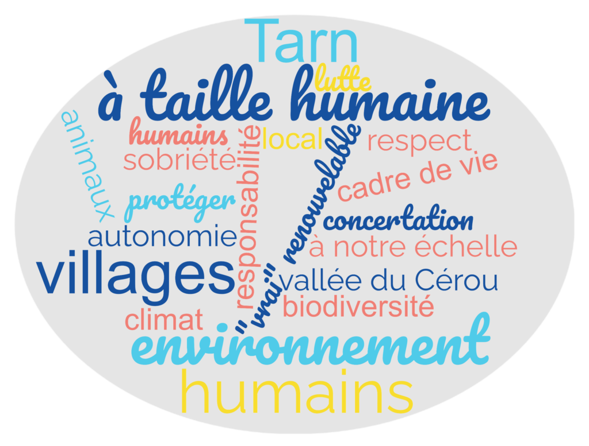

Notre association « Protégeons la Vallée du Cérou dans le Tarn » est mobilisée pour protéger notre cadre de vie de grande qualité, à la fois sur le plan environnemental et humain. Elle lutte donc contre les énergies renouvelables à dimensions industrielles, qui servent d'abord des intérêts financiers privés.
Parti en 2023 d'une inquiétude face à un risque d'implantation d'éoliennes industrielles à Salles, notre mouvement s'est vite étendu dans les villages alentours, et a permis de fédérer les énergies. Depuis, la menace s'est élargie : aux projets éoliens s'ajoutent désormais de nombreux projets de photovoltaïque industriel et d'agrivoltaïsme, qui menacent nos terres agricoles et nos paysages sur l'ensemble de la vallée. Notre objectif reste le même : éviter que notre Vallée du Cérou soit définitivement défigurée par des projets industriels d'énergies renouvelables.
L'association compte aujourd'hui plus de 140 membres.

Présidents : André Nouviale, Michel Tigli, Jacques Caprasse
Secrétaires : Véronique Gaumont, Bettina Bergounhou
Trésorières : Ghislaine Tigli, Catherine Caprasse
Après Tchernobyl et Fukushima, l'énergie produite par les centrales nucléaires a été considérée comme une énergie à combattre et remplacer.
Cette conception a été à la base de la création du mouvement écologique. Il fallait produire notre énergie au moyen d'une « alternative propre »… L'énergie éolienne nous est présentée par ce mouvement depuis plus de 20 ans comme une « énergie verte »
Avant d'y être confrontés de près et de nous renseigner sur le sujet de manière approfondie, plusieurs d'entre nous pensaient aussi cela.
Notre mouvement a donc démarré par une demande de réflexion et de concertation avec les habitants au préalable.